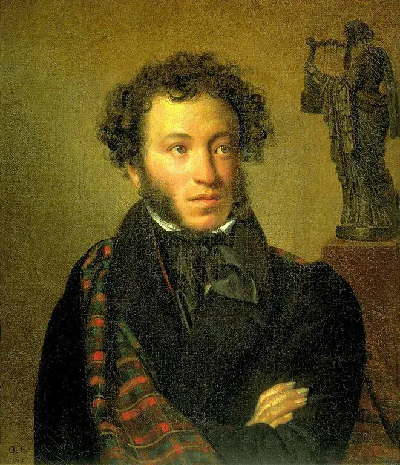

Здравствуйте, это моя первая страница.
Добро пожаловать! :)
Любви, надежды, тихой славы
Недолго нежил нас обман,
Исчезли юные забавы,
Как сон, как утренний туман;
Но в нас горит еще желанье,
Под гнетом власти роковой
Нетерпеливою душой
Отчизны внемлем призыванье.
Мы ждем с томленьем упованья
Минуты вольности святой,
Как ждет любовник молодой
Минуты верного свиданья.
Пока свободою горим,
Пока сердца для чести живы,
Мой друг, отчизне посвятим
Души прекрасные порывы!
Товарищ, верь: взойдет она,
Звезда пленительного счастья,
Россия вспрянет ото сна,
И на обломках самовластья
Напишут наши имена!
К Чаадаеву, Александр Пушкин